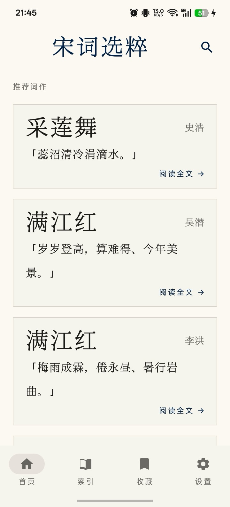
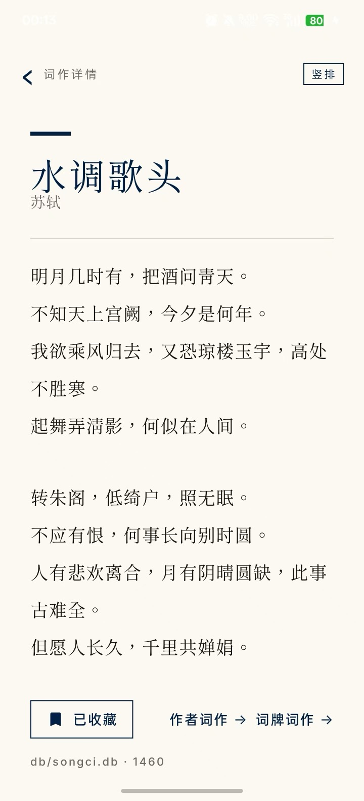
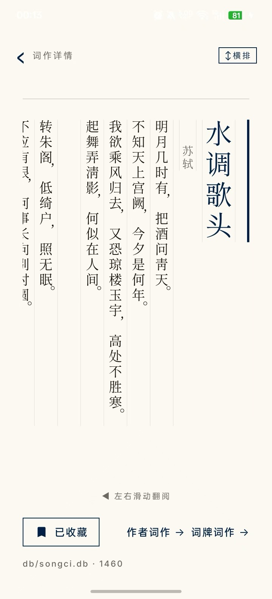
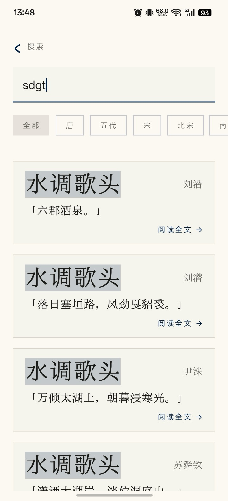
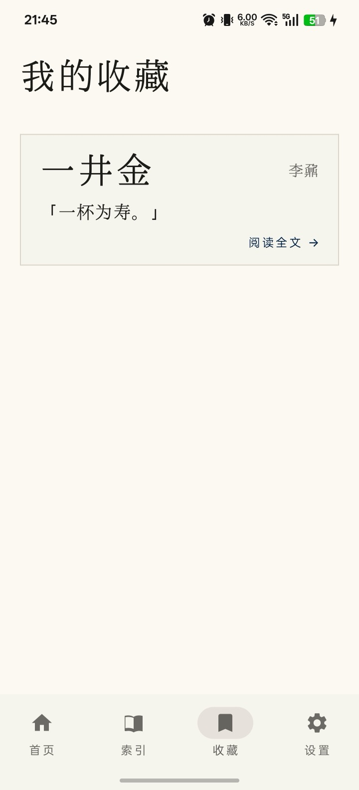
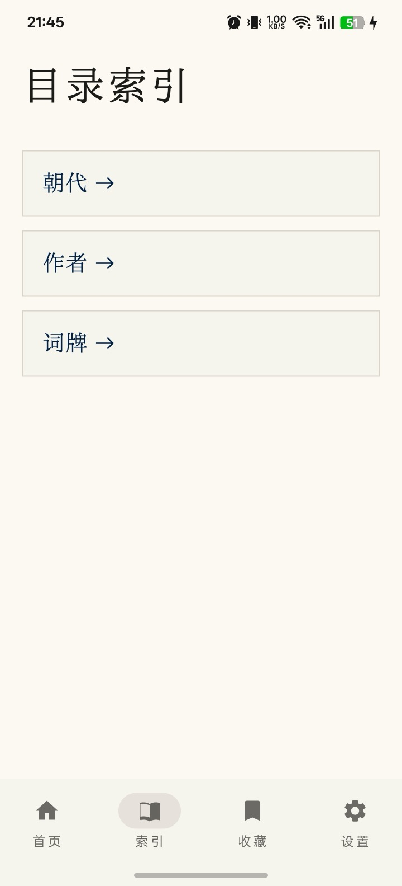
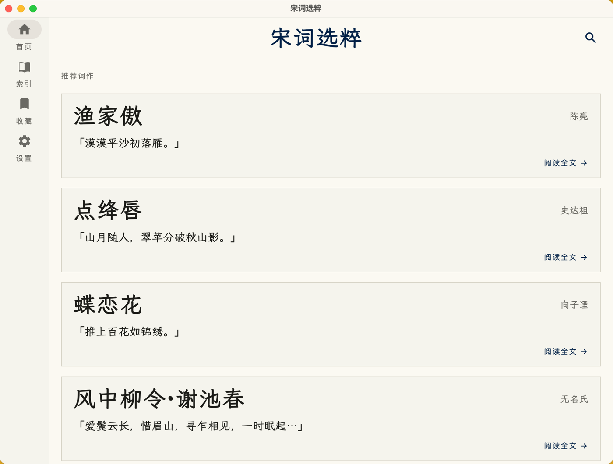
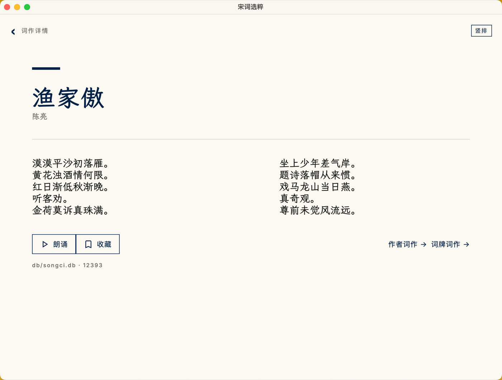
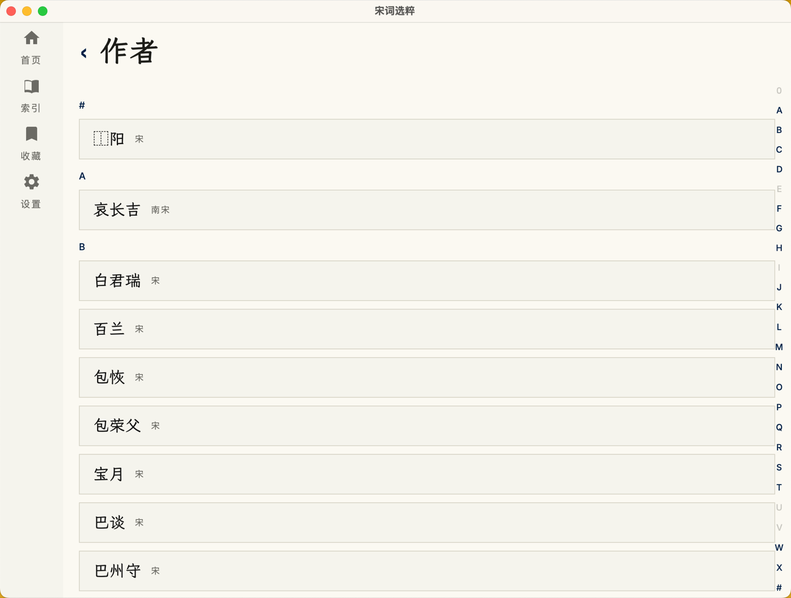
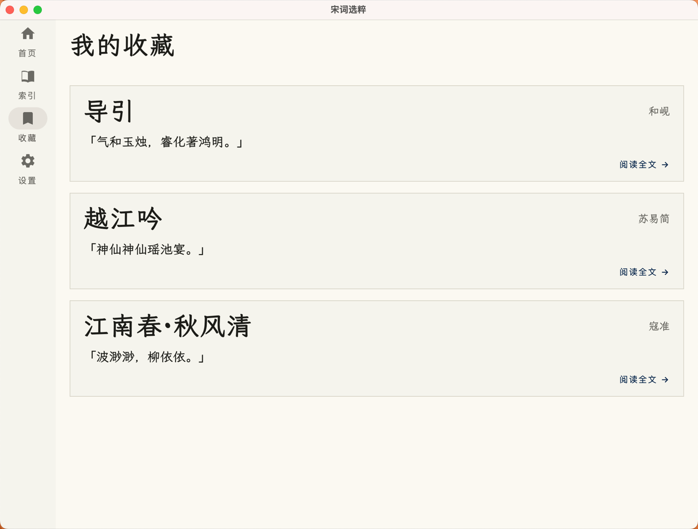

水调歌头
「但愿人长久，千里共婵娟。」
Songci Selection
高保真数字手稿风格的宋词鉴赏应用与数据仓库—— 钦定词谱格律体系、赫蹏横竖排版、三端小组件与每日一词通知， 在羊皮纸与书生蓝之间，重现纸上读词的版式之美。
「但愿人长久，千里共婵娟。」
「众里寻他千百度，蓦然回首，那人却在，灯火阑珊处。」
「今宵酒醒何处？杨柳岸，晓风残月。」
一套 Kotlin Multiplatform 代码，三端共享同一份手稿版式。
Android / iOS / macOS 三端原生体验；768dp 宽屏自动切换双栏主从布局，字号与字体风格全端持久化。
词作详情按上下阕分段呈现（格律段边界），2,306 个词谱变体随手切换，异名显示、韵脚下划线一目了然。
自研 kheti-compose：行末标点悬挂、中西文 ¼ 字宽间距、标点挤压；正文支持传统竖排，列序右→左、縦中横。
词牌 / 作者 / 诗句全文检索，词牌异名自动展开；收藏与最近浏览记录随时回访，首页每日推荐池常读常新。
Android 2x2 / 4x1（Glance + 楷体）与 macOS WidgetKit 小 / 中号组件，午夜自动刷新，点击深链直达全文。
三端定时推送「词牌·作者 + 首句」，点击深链直达词作详情；设置页内建翻页钟风格时间选择器。
Python 数据管线 + SQLite 词库，格律映射与词牌异名全量治理。
应用实机渲染素材，更多见仓库 screen/ 目录。
手机 · 竖屏






平板 · 横屏 宽屏双栏




Android 提供预编译 APK；iOS / macOS 从源码构建。
# 应用构建（详见 app/README.md）
cd app && ./gradlew :composeApp:desktopTest :composeApp:packageDmg
# 数据重建（源数据变更后）
python3 db/build.py && python3 app/data/tools/prepare_db.py
# macOS 一键部署（compose 打包 + 小组件 extension + 签名 + 装 /Applications）
./scripts/macos-widget-deploy.sh